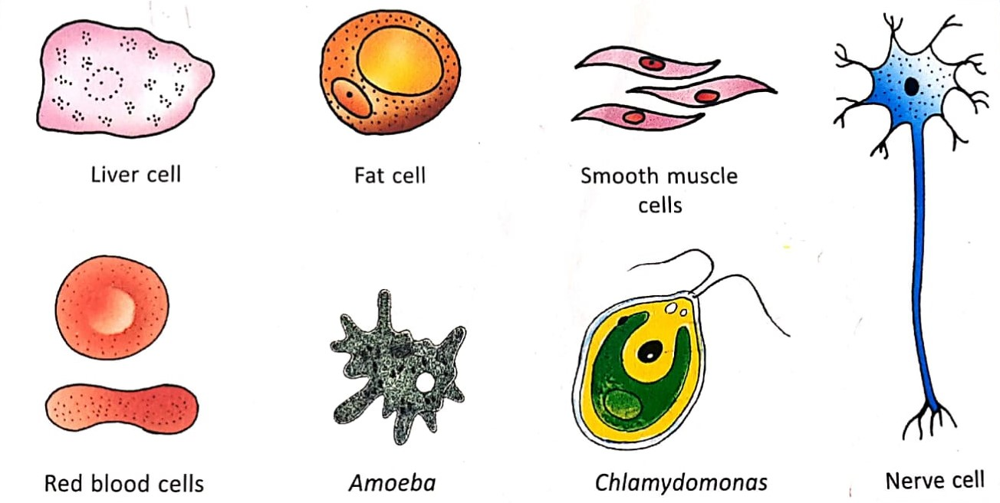

All organisms are of different sizes. This difference, in the size of the organisms, is due to the number of the cells present in them. While amoeba is a living organisms consisting of a single cell, an earthworm has millions of cells.
The shapes of cell differ not only in different organisms but also in different organs of the same organisms They may be oval, spherical, cubodial, fibre-like polygonal. These difference in shapes are due to their location and function in the tissue.For instance, a nerve cell has to transmit nerve impulses to organs located in different parts of the body. Hence, they posses a long fibre-like structure.
Cell vary considerably in their size. The Smallest cell PPLO (PLEURO PNEUMONIA-LIKE ORGANISM), also called mycoplasma. is about 0.1 micron in diameter. The ostrich egg considered to be the largest cell is nearly 170 mm in diameter.